| 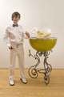 |
Andrew Sexton"Portraits of Family and Friends"
May 15 - June 21, 2008 |
Seonna Hong "Viscery Loves Company" at Kaikai Kiki in TokyoMay 8 - June 1, 2008 |
If I told you you were beautiful, would you date me on the regular?Featuring Amanda Riner, Billy Miller, Colby Bird, Dave McDermott, David Gilbert, David Benjamin Sherry, Dike Blair, Eric Huebsch, Jaqcues Louis Vidal, Jeff Tranchell, Jonah Groeneboer, Jonathan Hartshorn, Josh Tonsfeldt, Joshua Smith, Julia Weist, Kate Levant, Lorenzo de Los Angeles, Mara Sprafkin, Matthew Robert Lutz-Kinoy, Michael Magnan, Michael Smith, Nolan Simon, Scott Hug, Tatiana Kronberg, and Timothy Hull. Music by Kingdom, Michael Magnan, and Jimmy Im March 22 - March 22, 2008 |
| 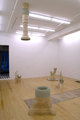 |
Diana PuntarLIVED LIVE EVIL DEVIL
January 11 - March 1, 2008 |
| 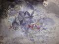 |
Aqsa Shakil: TracesOpening Reception: Thursday, November 29th, 2007. November 29, 2007 - January 5, 2008 |
| 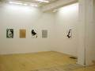 |
Cheryl Donegan: Luxury DustOpening Reception: September 6, 2007 6-8pm September 6 - October 6, 2007 |
| 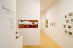 |
The World Is YoursJonathan Allen, David Brooks, Luke Butler, Rä di Martino, KB Jones
Opening Reception: Thursday July 19, 6-8pm July 19 - August 17, 2007 |
| 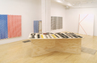 |
Tom Meacham: the greater goodWe are pleased to announce Tom Meacham’s second solo show with Oliver Kamm/5BE Gallery. May 31 - July 13, 2007 |

|
Seonna Hong: Our Endless Numbered DaysOpening Reception: Friday, April 27, 6-8pm April 27 - May 26, 2007 |
| 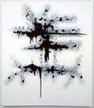 |
Michael RodriguezOpening Reception: Friday, March 23, 6-8pm March 23 - April 21, 2007 |
| 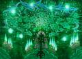 |
Kamrooz Aram: Night Visions and Revolutionary DreamsFebruary 16 - March 17, 2007 |
| 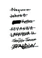 |
Joe Ovelman: For Whites OnlyJanuary 12 - February 10, 2007 |

|
Noah Fischer: Rhetoric MachineNovember 30, 2006 - January 6, 2007 |
| 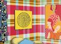 |
Jim RichardJim Richard October 20 - November 25, 2006 |
| 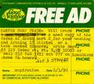 |
Street Poets and VisionariesSelections from the UbuWeb Collection
September 7 - October 14, 2006 |
| 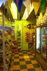 |
Justin Lowe: HELTER SWELTERHELTER SWELTER
June 1 - July 28, 2006 |
| 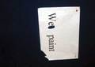 |
TM/GS : CD/SCTom Meacham, Gary Stephan, Cheryl Donegan, Stephanie Campos
Oliver Kamm/5BE Gallery is pleased to present the second in a series of group exhibitions in which gallery artists choose another artist with whom to show. This year, Tom Meacham and Cheryl Donegan selected Gary Stephan and Stephanie Campos respectively. April 20 - May 20, 2006 |

|
Andrew SextonAndrew Sexton’s solo debut exhibition March 17 - April 15, 2006 |

|
Amy Granat: Scratch Films / Stars Way Out ( for OK )Oliver Kamm/5BE Gallery is pleased to present Amy Granat’s New York City, Scratch Films / Stars Way Out (for OK). February 9 - March 11, 2006 |
| 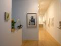 |
Bricks In The HoodThe grand opening of Oliver Kamm/5BE Gallery's new exhibition space presents a group show of gallery artists. New Location: 621 West 27th Street (between 11th/12th Aves) January 12 - February 4, 2006 |
| 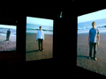 |
Jen DeNike: Seasons In The Sun7 Channel Video Installation November 18 - December 22, 2005 |
| 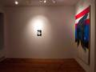 |
Tom MeachamTom Meacham's New York solo debut exhibition. October 14 - November 12, 2005 |
| 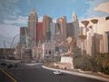 |
Steven WallsSecond solo show at Oliver Kamm/5BE Gallery September 9 - October 8, 2005 |
| 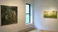 |
Delicate Demons and Heavenly DelightsCurated by Kamrooz Aram and Jessica Lin Cox
Summer Group Show June 10 - July 29, 2005 |
| 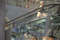 |
Cheryl Donegan: Old, TemporaryOliver Kamm/5BE Gallery is pleased to present two new videos by Cheryl Donegan. This exhibition will mark Donegan’s second solo show with the gallery. May 6 - June 4, 2005 |
Colin McLainSecond solo show at Oliver Kamm/5BE Gallery April 1 - April 30, 2005 |
| 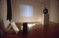 |
KA/VH : RA/AGRichard Aldrich, Kamrooz Aram, Amy Granat, Van Hanos
February 25 - March 26, 2005 |
| 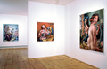 |
Don Doe: The Sea Is DeepJanuary 21 - February 19, 2005 |
Michael RodriguezDecember 10, 2004 - January 15, 2005 |
| 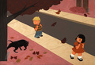 |
Seonna Hong: AnimusOctober 22 - December 3, 2004 |
Joe Ovelman: Like a VirginApril 2 - May 1, 2004 |
Kamrooz Aram: Beyond the Borders, Between the TreesFebruary 20 - March 27, 2004 |